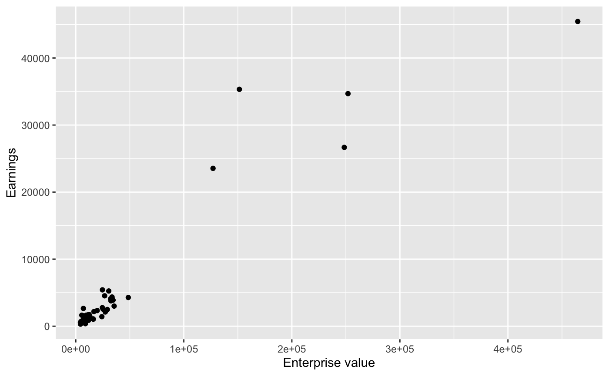
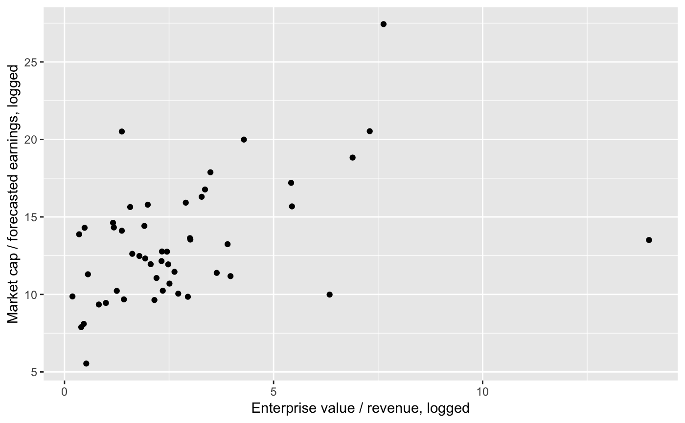
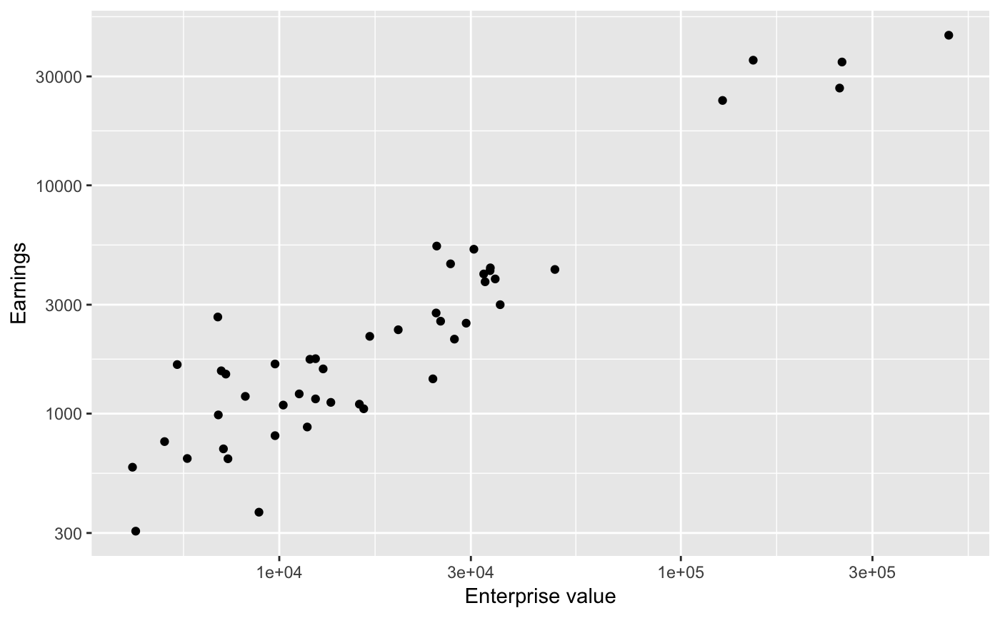
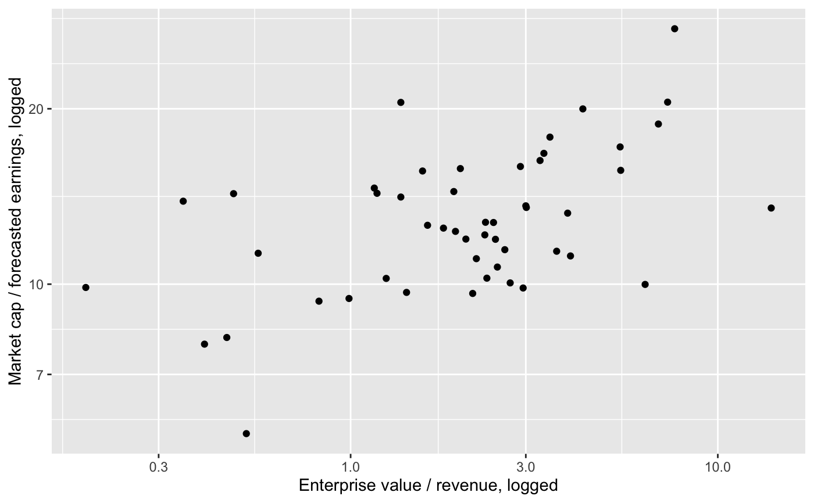

sp500.RdFifty companies were randomly sampled from the 500 companies in the S&P 500, and their financial information was collected on March 8, 2012.
sp500
A data frame with 50 observations on the following 12 variables.
Total value of all company shares, in millions of dollars.
The name of the stock (e.g. AAPL for Apple).
Enterprise value, which is an alternative to market cap that also accounts for things like cash and debt, in millions of dollars.
The market cap divided by the earnings (profits) over the last year.
The market cap divided by the forecasted earnings (profits) over the next year.
Enterprise value divided by the company's revenue.
Percent of earnings that are profits.
Revenue, in millions of dollars.
Quartly revenue growth (year over year), in millions of dollars.
Earnings before interest, taxes, depreciation, and amortization, in millions of dollars.
Total cash, in millions of dollars.
Total debt, in millions of dollars.
Yahoo! Finance, http://finance.yahoo.com, collected March 8, 2012.
OpenIntro, http://www.openintro.org
library(ggplot2) ggplot(sp500, aes(x = ent_value, y = earn_before)) + geom_point() + labs(x = "Enterprise value", y = "Earnings")#> Warning: Removed 3 rows containing missing values (geom_point).ggplot(sp500, aes(x = ev_over_rev, y = forward_pe)) + geom_point() + labs(x = "Enterprise value / revenue, logged", y = "Market cap / forecasted earnings, logged")ggplot(sp500, aes(x = ent_value, y = earn_before)) + geom_point() + scale_x_log10() + scale_y_log10() + labs(x = "Enterprise value", y = "Earnings")#> Warning: Removed 3 rows containing missing values (geom_point).ggplot(sp500, aes(x = ev_over_rev, y = forward_pe)) + geom_point() + scale_x_log10() + scale_y_log10() + labs(x = "Enterprise value / revenue, logged", y = "Market cap / forecasted earnings, logged")